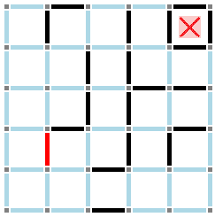
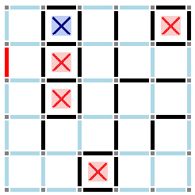
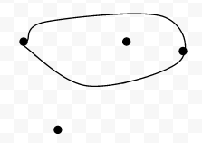

A Visual-spatial approach to Sprouts and Dots and Boxes
Here's a nice article about how to overcome the initial difficulties in learning Sprouts and Dots and Boxes.
Sprouts and Dots and Boxes are two games that have extremely low clarity. While most games require a great deal of knowledge to play well, these games require certain specific knowledge to even play anything other than random moves. In addition, both are dominated by mathematical analysis, so if you are used to playing a game based on visual-spatial reasoning (which is dominant in most games) it can be very difficult to pick either game up.
It happens that roughly the same visual strategy can be applied to both games as a first step in making them less opaque. I will assume that the reader is familiar with the rules of both games, and the double-cross rule in Dots and Boxes.
In both games, there is a fight for control of “parity”: one player wants to divide the board into an even number of regions, and the other wants to divide the board into an odd number of regions. It is important to know beforehand which is which. I use the mnemonic “Normally, lefties want change.” In a normal (last-move wins*) game, the “left” (first) player wants a different parity from the beginning of the game:
In Dots and Boxes
Starting from an even number of boxes, left wants an odd number of chains
Starting from an odd number of boxes, left wants an even number of chains
In Sprouts
Starting from an even number of spots, left wants an odd number of survivors
Starting from an odd number of spots, left wants an even number of survivors
*Dots and Boxes is a territory game, not a combinatorial game, but the strategy still works because you generally do not want to be the first person to move into a chain.
In Dots-and-Boxes, the visual strategy is to divide the board into regions, and learn to visually tell whether a region is large enough to support a chain or not. You can count territory similar to Go, but much simpler, to decide whether or not to sacrifice boxes to make a region smaller. Just this strategy was enough to get me to tier 2 of the Little Golem championship, but there I was thoroughly trounced by people who knew better the mathematical side of the game.

The upper right, lower right, and middle are guaranteed to be chains. Can the middle and lower right be connected? Can the upper left be separated from the middle?

Three chains are guaranteed. Right (blue) can prevent Left (red) from making a chain in the upper left, but Left can force several sacrifices in the process.
In Sprouts I find it a bit harder, because even small regions can often be divided, but the same basic principle remains: visually divide the field into regions that are guaranteed to have a survivor. If there is a live spot inside of a bubble, there must eventually be a survivor in that bubble. There are a lot of simple patterns that turn up over and over, and with some practice you can learn which ones are locally good for one or the other player.

Two Survivors are guaranteed: one outside the bubble, and one inside.
Thinking about these games as visual-spatial games can give a strong foundation, so that you can get engaged with the games faster and more easily. Once you are thus engaged, learning the mathematical side to the games becomes less onerous, and from there the whole depth of the game is available for you to explore.